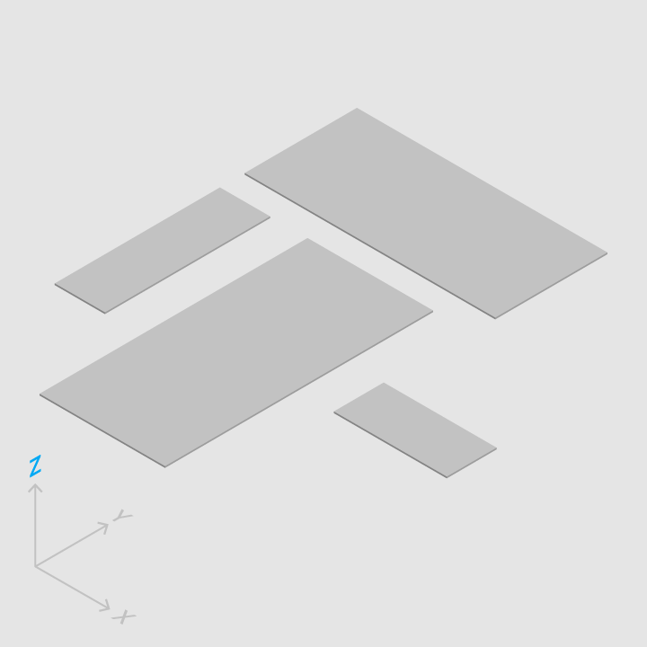

形态与运动
Material 是虚拟世界中的物质实体，因此多个 Material 不能同时占据相同的位置，由 Material 组成的层面也不能互相重叠或穿透。
使用阴影区分实体层面。
Material 不能重叠。
Material 不能互相穿透。
由 Material 组成的层面类似于纸张，是一种平整、轻盈的固体，厚度均固定为 1dp。

正确
Material 层面具有统一的厚度。

多种厚度的 Material 层面钳制界面元素的活动。
外力作用不能透过 Material，因此用户的操作不能穿过高层面作用于低层面。
用户操作仅作用于选中的或在作用范围最前端的层面。
用户操作不能穿透 Material 层面。
Material 可以凭空产生和消失。因此 Material 层面可以在平面上自由变换形状与长、宽。
Material 层面的形状与尺寸由 Material 的有无决定。
Material 层面可以自由地拆分与无缝组合。
Material 之间的分割与连结干净利落。
Material 可以在三维空间内自由移动。但由于虚拟空间海拔高度有限，为了保证界面稳定性，Material 层面不能扭曲、折叠、翻转。
同一 Material 层面中的 Material 只能处于同一海拔。
Material 不能穿透大小有限的虚拟空间。